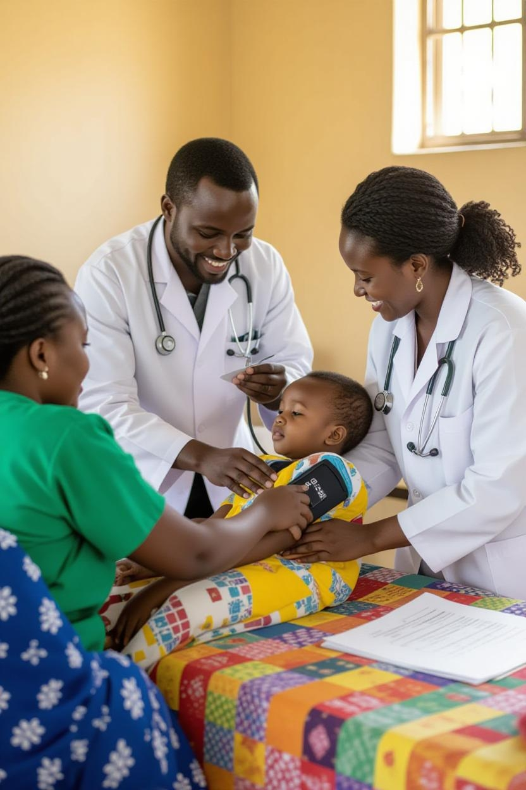

Hospitais para populações vulneráveis
Nossa ONG direciona seus recursos oriundos de doação na construção
de hospitais em regiões carentes da África, levando atendimento
médico a comunidades isoladas. Atualmente erguemos 12 unidades de
saúde, oferecendo tratamento gratuito e salvando vidas diariamente.
"Hospital na Etiópia"

Escolas para alfabetização infantil
Construímos escolas em comunidades africanas vulneráveis, garantindo
acesso à educação para crianças carentes. Nossos projetos incluem
salas de aula equipadas, biblioteca, merenda escolar e formação de
professores voluntários, criando futuro e alegria.
"Alunos estudando em uma escola na Etiópia"

Escolas técnicas para capacitação agrícola
Capacitamos agricultores etíopes através de nossa escola agrícola
especializada em cultivo sustentável de café. Ensinamos técnicas
modernas, manejo ecológico do solo, irrigação eficiente e práticas
de desenvolvimento sustentável, fortalecendo a autonomia produtiva.
"Homens adultos estudando em uma sala de aula"